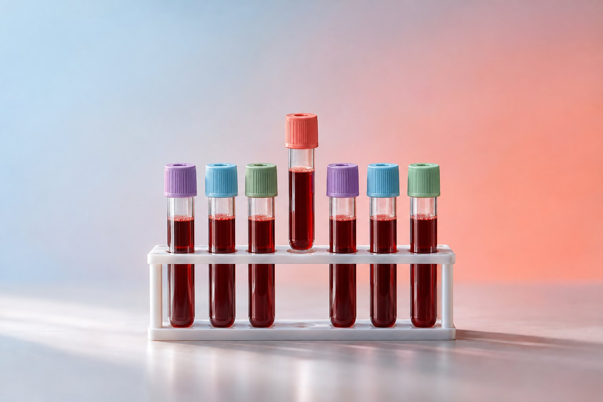
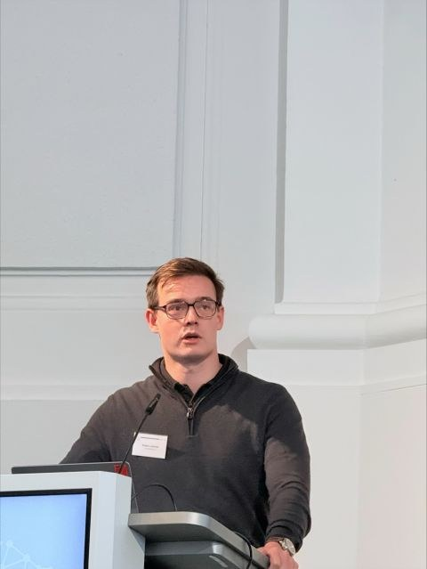
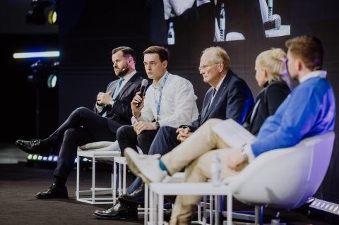
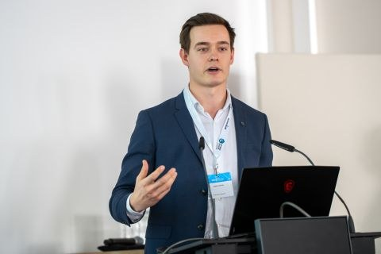
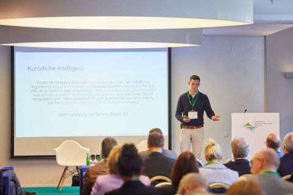
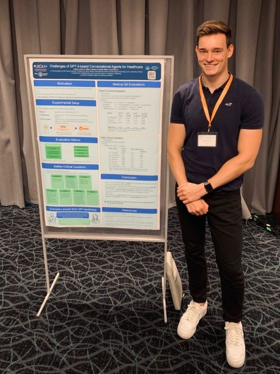
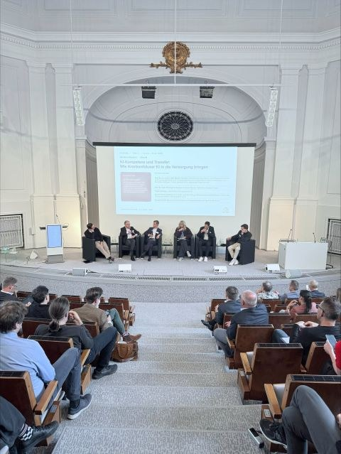

Vorträge
Über 85 Vorträge, Panels und Workshops seit 2022, für Fachgesellschaften, Kliniken, Krankenkassen und die forschende Industrie. Fortbildungen auf Wunsch CME-zertifiziert.
Formate
Keynote
20 bis 45 Minuten für Kongresse, Jahresauftakte und Symposien.
Zertifizierte Fortbildung
CME-zertifizierte Vorträge für Ärztinnen und Ärzte, in Präsenz oder online.
Panel und Moderation
Podiumsdiskussionen zu KI-Strategie, Regulierung und Versorgung.
Workshop
Praxisnahe Formate für Teams, Qualitätszirkel und Führungskräfte.
Themen

KI in der Diabetologie
Sensordaten, Entscheidungsunterstützung und Patientenkommunikation in Klinik und Schwerpunktpraxis.
Mehr zum Thema
Sprachmodelle in der Medizin
Was ChatGPT und andere Sprachmodelle in Diagnostik, Dokumentation und Ethik leisten und wo ihre Grenzen liegen.
Mehr zum Thema
Labor und Diagnostik
KI und Robotik im Labor, von der Präanalytik bis zum Befund.
Mehr zum Thema
KI im Krankenhaus
Strategie, Einführung, Pflege, Praxissoftware und Regulierung aus Sicht eines großen Klinikverbunds.
Mehr zum Thema


Unterwegs
Momente von Bühnen und Podien, mehr auf LinkedIn.








Ausgewählte Vorträge
Eine Auswahl. Weitere Anfragen für 2027 sind willkommen.
2026
- Nov.Podium: KI in der Pflege mit voize und DedalusDeutscher Pflegetag, Berlin
- Nov.Praxissoftware im UmbruchDDG Herbsttagung, Dresden
- Okt.Business Insights: Von der Betriebswirtschaft zur InformatikFH Aachen, Aachen
- Okt.Podium: KI-Strategie, Kompetenz und TransferDGKIMED Summit, Berlin, Charité
- Sept.Boehringer Ingelheim, Denkfabrik Diabetes, Herz und NiereFrankfurt am Main
- Aug.KI in der HausarztpraxisDGIM
- MaiDigital Rheumatology DaysBerlin
- Apr.PodiumRecare AI Summit, Berlin
2025
- Nov.KI in der DiabetologieDDG, 106. Kurs Klinische Diabetologie
- JuliKI-Lösungen bei AGAPLESIONTIMETOACT GROUP Insights, Köln
- JuniKI und RobotikSiemens Healthineers, Referenzkundenworkshop
- MaiKI in der Medizin: Zusammenarbeit von Mensch und MaschineBKK Tag
- Apr.KI in der Diabetologie – Heute und MorgenNovo Nordisk, Spezialistentreffen Diabetologie, Radebeul
- MärzPraxischeck KIDRG-Forum, Berlin
- Feb.DiaSorin SymposiumFrankfurt am Main
- Jan.Zukunft ist jetzt – KI-gestützte Diagnostik und TherapieLilly, DMP-Tagung, Bonn
2024
- Nov.Die Zukunft der DiabetesversorgungdiabetesDE, Meilensteine der modernen Diabetologie, Berlin
- Nov.KI – Eine Revolution in der Medizin?DDG-Präsenz, Berlin
- Sept.Die Zukunft der Diabetologie – KI im Dienste des PatientenNovo Nordisk, Zukunftsforum Diabetes, Mainz
- Sept.Robotik & KI im LaborSiemens Healthineers, DGKL, Bremen
- Aug.Künstliche Intelligenz – Gibt es bald keine Rheumatologen mehr?Rheumasymposium, Herne
- MaiKI im Gesundheitswesen – Forschung und AnwendungKongress der Gesundheitsnetzwerker, Berlin
- MärzKI in der Diagnostik seltener ErkrankungenParlamentarischer Abend, Förderverein unerkannte und seltene Erkrankungen, Wiesbaden
- MärzLarge Language Modelle in der medizinischen AnwendungLilly, Face-to-Face, Frankfurt am Main
2023
- Okt.KI im Gesundheitswesen22. Europäischer Gesundheitskongress, München
- Okt.GPT in der Medizin und im GesundheitswesenSiemens Healthineers, DGKL, Mannheim
- Sept.Challenges of GPT-3-based Conversational Agents for HealthcareRANLP 2023, Varna